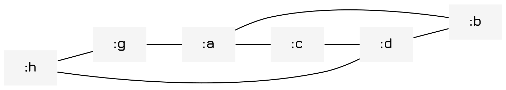
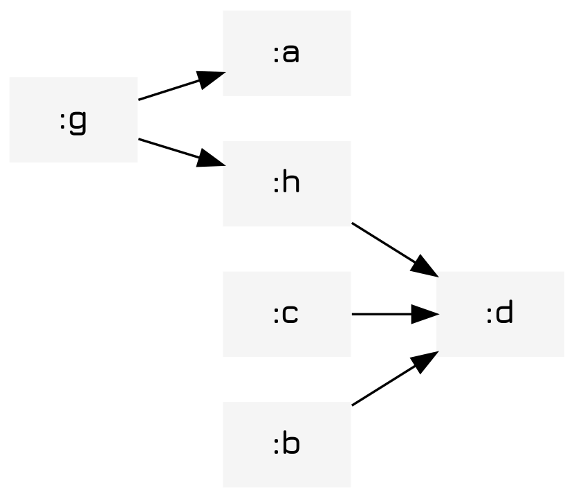
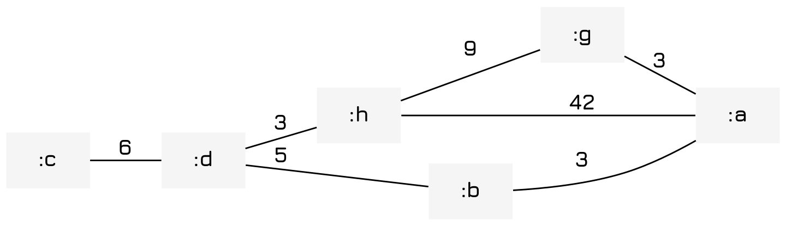

Implementing Graphs
Table of Contents
Introduction
Graphs are a fairly common mathematical structure that represents a series of nodes with edges that connect them to other nodes. Here we will implement some code that implements graphs as well as code to produce representations of graphs. 1 Which I think I will extend to representing arbitrary Clojure code in general The code was mostly developed for my possibly correct solution to the travling saleseman trolly problem, so check that out as well.
Implementation
So we want to define a graph. But first, let's ask the question, what is a graph? How do graphs work?
A graph is simply a series of points called nodes that have links between them called edges. Edges in the most basic form of graph are undirected and unweighted, which is usually interpreted 2 As with any abstract structure it is an interpretation, and many others exist. The rules in math are made up anyways, so feel free to add some more! as them either costing nothing to traverse (or providing nothing) and being possible to traverse in either direction.
The weighted case is the more interesting one, in which many of the most exciting optimization problems and algorithms in computer science exist, form the traveling salesman problem to Dijkstra's algorithm for the shortest path.
The directed case is even more complicated, with each edge serving as a one-way path to another edge. This also has a ton of really exciting applications in the analysis of program states and category theory where the edges are called arrows and map morphisms between categories.
Now, of course, the obvious approach would be to create nodes as little objects with pointers to other nodes as edges. However, I'm not doing that 3 Searching piles of pointers is irritating no matter how you do it and tends to make any operations a lot messier. It's also, in this case, much slower as you can't just pick any node as easily. and instead I will be implementing the graph as a map of nodes that sets of edges indicating where they go to and where they go from.
So a graph might have this sort of structure. The edges-to set is the set of edges that are leaving the node, and edges from are the set of edges that are heading to the node itself.
{:foo {:edges-to #{:bar :baz} :edges-from #{:bar :baz}} :bar {:edges-to #{:foo} :edges-from #{:foo}} :baz {:edges-to #{:foo} :edges-from #{:foo}}}
So with the structure out of the way, let's start defining things.
Common Features
All our graphs will use a collection of standard edges and nodes. In fact the structure of the graph will also be exactly the same too! The only differences will be in interpretation and how the various methods act.
(defrecord Edge [src dest weight]) (defrecord Node [edges-to edges-from])
Unfortunately (and fortunately) Clojure doesn't have multiple inheritance, so you have to define the inherited functions with separate functions and then call these functions from your new thing. Alternatively you can use multimethods, but I don't like those so here we just define a ton of functions.
Killing Orphans
We also want to be assured that we can kill any orphans that exist in the graph. Since they have no support one might imagine that they will naturally be garbage collected, but it turns out that we must go and do it ourselves.
(defn- kill-orphans-impl [graph graph-ctor] (->> graph :node-syms (remove #(and (empty? (get % :edges-to)) (empty? (get % :edges-from)) )) (apply concat) (apply hash-map) graph-ctor))
Killing Nodes
Killing nodes is also something that can be done in all cases through this function. It kills all edges to the node and then kills the node itself.
Unfortunately first we have to define a dummy-function so that it can compile before we have a function to kill edges for that specific case.
(defn- kill-edge [graph from to] nil)
Then we define the function itself.
(defn- kill-node-impl [graph node-sym] (as-> graph g (reduce #(kill-edge %1 %2 node-sym) g (->> (get-in graph [:nodes node-sym :edges-from]) (map #(:src %)))) (reduce #(kill-edge %1 node-sym %2) g (->> (get-in graph [:nodes node-sym :edges-to]) (map #(:dest %)))) (:nodes g) (dissoc g node-sym) (assoc graph :nodes g)))
Killing Edges
We also define a simple function too kill edges as well. This will have to be done twice for the undirected graph case, but can be trivially wrapped in the undirected graph case.
(defn- kill-edge-impl [graph from to] (let [from->to (->Edge from to 0)] (-> graph (update-in [:nodes from :edges-to] remove #{from->to}) (update-in [:nodes to :edges-from] remove #{from->to}))))
Creating Edges
We can also define a function to create an edge given a source and a destination. This is useful as even in the directed graph case it will call this function.
(defn- add-edge-impl [graph from to weight] (let [from->to (->Edge from to weight)] (-> graph (update-in [:nodes from :edges-to] conj from->to) (update-in [:nodes to :edges-from] conj from->to))))
Creating Nodes
Adding nodes is also trivial, with this adding a node with no name.
(defn- add-node-impl [graph node-sym] (assoc-in graph [:nodes node-sym] (->Node #{} #{})))
Getting Nodes
To get node you just grab it from the map of nodes the graph has. Easy!
(defn- get-node-impl [graph node-sym] (get-in graph [:nodes node-sym]))
Unweighted Graphs
The most basic case is the unweighted class, which we implement below.
BasicGraph
We define a protocol for basic, undirected graphs. To avoid name collisions we call the protocol BasicGraph. It defines the various functions we can expect to call on any graph.
(defprotocol BasicGraph "A protocol defining a weighted or unweighted graph." (edge [graph from to] "Add an edge to the graph.") (node [graph node-sym] "Add a node to the graph (node must be a unique identifier).") (get-node [graph node-sym] "Get a node from the graph (including edges).") (kill-orphans [graph] "Remove all orphans from the graph.") (kill-edge [graph to from] "Kill an edge given it's description.") (kill-node [graph node-sym] "Kill a node within the graph.") (dot-repr [graph] "Produce DOT code representing the graph"))
Undirected Graphs
An unweighted graph is implemented simply by ignoring the :weight value in the graph. In this graph the distance between nodes does not matter. We can also construct an unweighted, undirected graph which is in description the simplest, but ironically, due to how we defined the nodes and edges above (and set it up) the most complicated here.
However, using the functions we defined above we can simplify it quite a bit. Adding an edge, as you can see, is simply
(ns graph-demo (:require [clojure.string :as str])) (defrecord Graph [nodes] BasicGraph (edge [graph from to] (-> graph (add-edge-impl from to 0) (add-edge-impl to from 0))) (node [graph node-sym] (add-node-impl graph node-sym)) (kill-orphans [graph] (kill-orphans-impl graph ->Graph)) (kill-edge [graph from to] (-> graph (kill-edge-impl from to) (kill-edge-impl to from))) (kill-node [graph node-sym] (kill-node-impl graph node-sym)) (get-node [graph node-sym] (get-node-impl graph node-sym)) <<graph-dot-repr>>) (defn graph [& nodes] (reduce node (->Graph {}) nodes))
The only really messy bit of code is the DOT representation generator, but even that is fairly simple.
(dot-repr [graph] (letfn [(remove-dups [[edge & edge-tuples]] (when edge (cons edge (remove-dups (remove #{edge} (map reverse edge-tuples))))))] (str "graph G {" "rankdir=\"LR\";" "size=\"15,7.5!\";" "fontpath=\"~/.local/share/fonts\";" "node[shape=record," "fontname=\"Jura Bold\"," "penwidth=0," "style=filled," "fillcolor=\"#f5f5f5\"];" (->> graph :nodes (mapcat (fn [[name {:keys [edges-to]}]] (map (fn [e] [name (:dest e)]) edges-to))) remove-dups (map #(format "\"%s\"--\"%s\";" (first %) (second %))) flatten str/join) "}")))
From here we can just use the code and display the graph.
(-> (graph :a :b :c :d :e :f :g :h :i) (edge :a :b) (edge :c :d) (edge :g :h) (edge :b :d) (edge :g :a) (edge :a :c) (edge :h :d) (dot-repr))

Directed Graphs
So to start out we basically do the same thing as before, though this time we do less of it. Pretty much all the code is reused.
(ns graph-demo (:require [clojure.string :as str])) (defrecord DiGraph [nodes] BasicGraph (edge [graph from to] (add-edge-impl graph from to 0)) (node [graph node-sym] (add-node-impl graph node-sym)) (kill-orphans [graph] (kill-orphans-impl graph ->DiGraph)) (kill-edge [graph from to] (kill-edge-impl graph from to)) (kill-node [graph node-sym] (kill-node-impl graph node-sym)) (get-node [graph node-sym] (get-node-impl graph node-sym)) <<digraph-dot-repr>>) (defn digraph [& nodes] (reduce node (->DiGraph {}) nodes))
Like before the only thing we have to really define is the actual DOT representation code and a slight modification to the edge generation code. Pretty much everything is entirely standard.
(dot-repr [graph] (str "digraph G {" "rankdir=\"LR\";" "size=\"15,7.5!\";" "fontpath=\"~/.local/share/fonts\";" "node[shape=record," "fontname=\"Jura Bold\"," "penwidth=0," "style=filled," "fillcolor=\"#f5f5f5\"];" (->> graph :nodes (mapcat (fn [[name {:keys [edges-to]}]] (map (fn [e] [name (:dest e)]) edges-to))) (map #(format "\"%s\"->\"%s\";" (first %) (second %))) flatten str/join) "}"))
Finally we can see the fruits of our labor and define a graph that we can also visualize.
(ns graph-demo) (-> (digraph :a :b :c :d :e :f :g :h :i) (edge :a :b) (edge :c :d) (edge :g :h) (edge :b :d) (edge :g :a) (edge :a :c) (kill-edge :a :c) (edge :h :d) (dot-repr))

Now you may notice that the directed graph case is ultimately a superset of the undirected graph case. While in the case of the undirected graph the nodes pointed at each other, they don't do that here.
Weighted Graphs
Now we get to weighted graphs, something that truly weighs heavily on my conscience. To implement them is pretty trivial and a minor extension of the previous.
BasicWeightedGraph Protocol
We also define a protocol for weighted graphs, that is to say graphs where the individual nodes have a weight to them. This is an obvious and trivial development on the previous protocol.
(defprotocol BasicWeightedGraph "A protocol defining a weighted or unweighted graph." (edge [graph from to weight] "Add an edge to the graph.") (node [graph node-sym] "Add a node to the graph (node must be a unique identifier).") (get-node [graph node-sym] "Get a node from the graph (including edges).") (kill-orphans [graph] "Remove all orphans from the graph.") (kill-edge [graph to from] "Kill an edge given it's description.") (kill-node [graph node-sym] "Kill a node within the graph.") (dot-repr [graph] "Produce DOT code representing the graph"))
Undirected Graph
Finally, a weighted graph is defined. Code is reused from the undirected case with only the weighted graph edge and dot-repr being redefined.
Unfortunately though,
(ns graph-demo (:require [clojure.string :as str])) (defrecord WeightedGraph [nodes] BasicWeightedGraph (edge [graph from to weight] (add-edge-impl graph from to weight) (add-edge-impl graph to from weight)) (node [graph node-sym] (add-node-impl graph node-sym)) (kill-orphans [graph] (kill-orphans-impl graph ->WeightedGraph)) (kill-edge [graph from to] (kill-edge-impl graph from to) (kill-edge-impl graph to from)) (kill-node [graph node-sym] (kill-node-impl graph node-sym)) (get-node [graph node-sym] (get-node-impl graph node-sym)) <<weighted-graph-dot-repr>>) (defn weighted-graph [& nodes] (reduce node (->WeightedGraph {}) nodes))
The production of a weighted DOT representation is an extra challenge due to the duplication of the edges. However, by reversing only the first two we can effectively remove the edges.
(dot-repr [graph] (letfn [(remove-dups [[edge & edge-tuples]] (when edge (->> edge-tuples (map #(concat (reverse (take 2 %)) [(last %)])) (remove #{edge}) remove-dups (cons edge))))] (str "graph G {" "rankdir=\"LR\";" "size=\"15,7.5!\";" "fontpath=\"~/.local/share/fonts\";" "edge[fontname=\"Jura Bold\"]""node[shape=record," "fontname=\"Jura Bold\"," "penwidth=0," "style=filled," "fillcolor=\"#f5f5f5\"];" (->> graph :nodes (mapcat (fn [[name {:keys [edges-to]}]] (map (fn [{:keys [src dest weight]}] [src dest weight]) edges-to))) remove-dups (map (fn [[name dest weight]] (format "\"%s\"--\"%s\"[label=\"%s\"];" name dest weight))) flatten str/join) "}")))
Now just to visualize it.
(ns graph-demo) (-> (weighted-graph :a :b :c :d :e :f :g :h :i) (edge :a :b 3) (edge :c :d 6) (edge :g :h 9) (edge :b :d 5) (edge :g :a 3) (edge :a :h 42) (edge :h :d 3) (dot-repr))

Weighted Directed Graph
Now, onto the weighted directed graph comrades. Can you imagine what it contains? You guessed it right! A graph that is weighted and directed. Shocking I know. You will also be (not) surprised to learn that the implementation of the weighted directed graph is fundamentally the same as the regular digraph, just with the addition of weights. Truly a revelation.
(ns graph-demo (:require [clojure.string :as str])) (defrecord WeightedDiGraph [nodes] BasicGraph (edge [graph from to weight] (add-edge-impl graph from to weight)) (node [graph node-sym] (add-node-impl graph node-sym)) (kill-orphans [graph] (kill-orphans-impl graph ->WeightedDiGraph)) (kill-edge [graph from to] (kill-edge-impl graph from to)) (kill-node [graph node-sym] (kill-node-impl graph node-sym)) (get-node [graph node-sym] (get-node-impl graph node-sym) <<weighted-digraph-dot-repr>>) (defn weighted-digraph [& nodes] (reduce node (->WeightedDiGraph {}) nodes))
We also modify our dot representation code to also add the weight to it, just like with the code above.
(dot-repr [graph] (str "digraph G {" "rankdir=\"LR\";" "size=\"15,7.5!\";" "fontpath=\"~/.local/share/fonts\";" "node[shape=record," "fontname=\"Jura Bold\"," "penwidth=0," "style=filled," "fillcolor=\"#f5f5f5\"];" (->> graph :nodes (mapcat (fn [[name {:keys [edges-to]}]] (map (fn [{:keys [dest weight]}] [name dest weight]) edges-to))) (map (fn [[name dest weight]] (format "\"%s\"->\"%s\"[label=\"%s\"];" name dest weight))) flatten str/join) "}"))
Finally we can see the fruits of our labor and define a graph that we can also visualize.
(ns graph-demo) (-> (weighted-digraph :a :b :c :d :e :f :g :h :i) (edge :a :b) (edge :c :d) (edge :g :h) (edge :b :d) (edge :g :a) (edge :a :c) (kill-edge :a :c) (edge :h :d) (dot-repr))
Now you may notice that the directed graph case is ultimately a superset of the undirected graph case. While in the case of the undirected graph the nodes pointed at each other, they don't do that here.